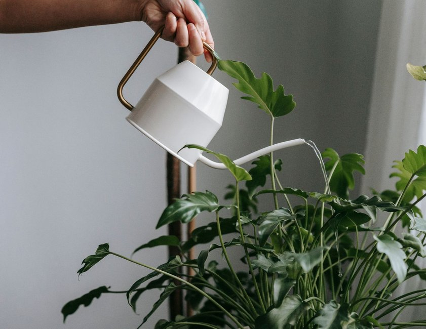

Comment bien arroser ses plantes d'intérieur sans les noyer

Photo: Teona Swift / Pexels
Le trop-plein d'eau tue plus de plantes d'intérieur que le manque d'eau. Les racines ont besoin d'air autant que d'eau. Voici une méthode simple qui s'adapte à presque toutes les plantes.
Vérifier avant d'arroser
Enfoncez un doigt dans le terreau sur deux à trois centimètres. S'il est humide, attendez. S'il est sec, arrosez. Pour les plantes grasses, les cactus, les zamioculcas et les sansevierias, attendez que le terreau soit sec sur toute sa profondeur. Pour les plantes qui aiment un terreau frais comme la fougère ou la calathea, arrosez dès que le dessus est à peine sec.
Arroser correctement
Utilisez de l'eau à température ambiante. Versez-la lentement au pied de la plante jusqu'à ce qu'elle sorte par les trous de drainage, puis videz la soucoupe après quinze à trente minutes. Évitez d'arroser en pleine chaleur et de mouiller inutilement le feuillage.
Le pot compte autant que l'eau
- Choisissez un pot avec un trou de drainage.
- Si vous utilisez un cache-pot décoratif, sortez la plante pour l'arroser et laissez-la égoutter.
- Utilisez un terreau adapté : plus aéré pour les plantes grasses.
Adapter à la saison
En été, le terreau sèche plus vite. En hiver, la plante pousse moins et boit moins : espacez les arrosages. Il n'y a pas de fréquence fixe valable pour toutes les plantes.
Les signes d'un excès d'eau
- feuilles molles ou jaunes ;
- terreau toujours détrempé, parfois avec une odeur de moisi ;
- base de la tige molle ou noire ;
- petits moucherons autour du pot.
Si vous soupçonnez des racines pourries, sortez la plante du pot, coupez les racines molles et noires avec des ciseaux propres, puis rempotez dans un terreau neuf et sec.
Les signes d'un manque d'eau
Terreau très sec qui se décolle du pot, feuilles ternes ou qui s'enroulent. Arrosez lentement, en plusieurs fois, pour que le terreau se réhydrate.
En cas de doute, arrosez un peu moins : une plante se remet mieux d'un manque d'eau que d'un excès. Gardez aussi vos plantes toxiques (pothos, philodendron, spathiphyllum) hors de portée des chats et des chiens.
Produits recommandés
En tant que Partenaire Amazon, je réalise un bénéfice sur les achats remplissant les conditions requises.